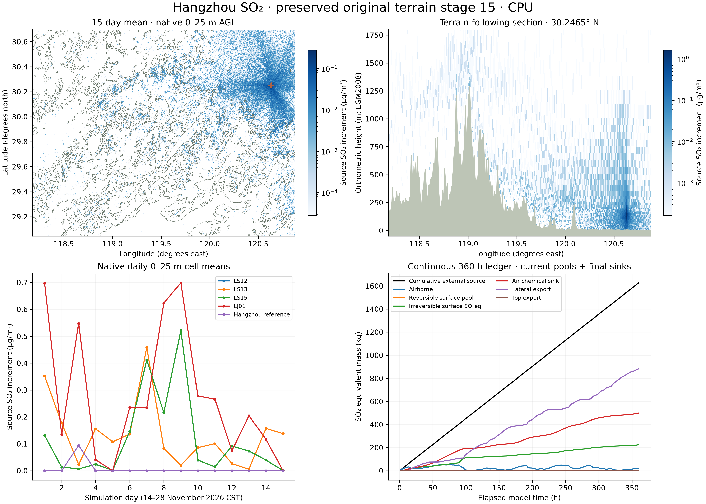

SCIENTIFIC · PRESERVED ORIGINAL STAGE 15 · CPU
Terrain, surface exchange and conserved mass.
360 continuous hours · four conditional EIA outlets · 500 m density bins · 52 terrain-following layers · 30 s timestep.

Concentrations average 24 hourly endpoint samples per day. The section uses actual modeled orthometric terrain at physical height scale 1×; layer heights are AGL. The 0–25 m quantity is a volume mean, not a 2 m observation. Zero values and valid negative DSM heights remain unchanged.


Surface absorption and conditional return
The forecast surface-release gate remained closed for all 360 hours: modeled re-release was zero. A separate warm/dry surface-only override, initialized with 1 kg in the reversible pool, released 0.69797084 kg gross over 24 hours. It is a mechanism control, not a real sunny-weather forecast. The cool/wet control released zero; the true zero-source, zero-initial-pool control remained exactly zero.
The final stores are 18.08743 kg airborne, 0.91384 kg reversible surface SO₂, and 224.66816 kg irreversible surface SO₂-equivalent; chemical loss is 499.19049 kg and lateral export 883.98008 kg. Mass closure is below 10⁻⁷ kg. Gross contact, wet uptake and fixation are transfers already represented in current pools and must not be added again. Daily surface arrays are day-end stores, not daily means.
What is and is not resolved
Bilinear terrain collision detects intervening ridges and reflects accepted paths using the terrain normal. The run recorded zero penetration flags and zero DDA failures, but nine collision-limit stops truncated the remaining movement after the eight-bounce limit. These are disclosed numerical limitations.
The original GLO90 DSM supplies roughly 90 m information, sampled on 500 m model nodes. Wind remains a horizontally repeated central forecast profile, with no terrain-driven wind solution, ambient vertical velocity, building flow or CFD. Surface uptake, fixation and temperature/humidity release coefficients are uncalibrated assumptions. The four EIA rates are conditional design parameters with unverified future operation and flow basis. Background is excluded: this is not total ambient Hangzhou SO₂ or an observation-validated forecast.